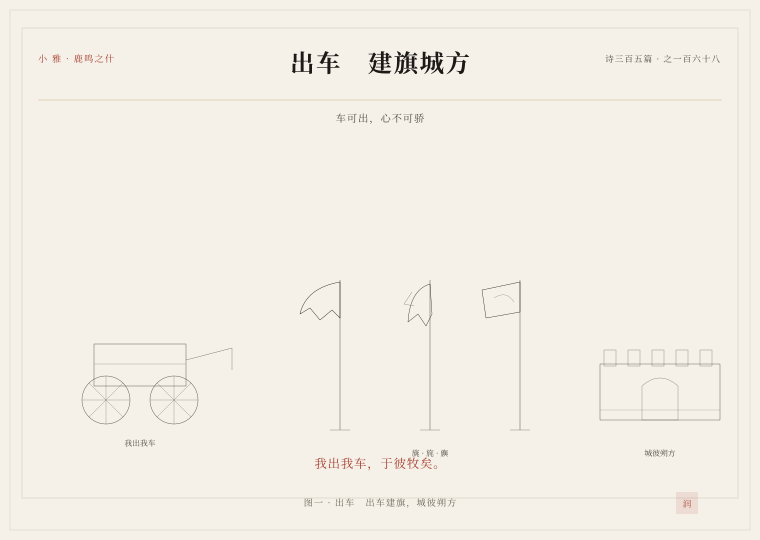
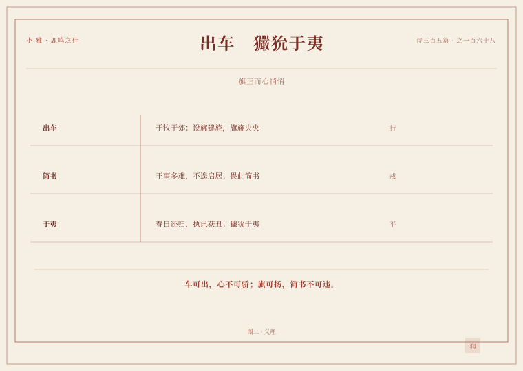

第一百六十八篇 出车
小雅 · 鹿鸣之什 SJ168
朗读 · 普通话
依经文原文朗读，章次不读出；配古琴底乐，不改速、不加拖腔。全库同一音色（豆包 TTS），非播音员录制。
一 解题
诗三判：
- 谁在说：从军之将，或劳还之使。出车于牧、于郊，建旐、设旄、扬旟；王命南仲，城彼朔方。
- 说什么事：六章。前二章写出车、旗帜、仆夫；三章写南仲城方、玁狁于襄；四章写往还雨雪、畏简书；五章写草虫阜螽、薄伐西戎；六章写春日还归、执讯获丑。
- 为何编在此：采薇遣戍，出车劳还；一往一还，一忧一凯。
小雅征伐之什，以采薇、出车、杕杜三篇成一组。
《毛序》：「《出车》，劳还率也。」
朱子《诗集传》：「赋也。牧，郊外也。谓，使也。仆夫，御者也。棘，急也。旐，龟蛇旗。旄，旄牛尾。旟，鸟隼旗。旆旆，飞扬貌。悄悄，忧貌。况瘁，益憔悴也。」三章：「南仲，周之大臣。方，朔方。彭彭，盛也。央央，鲜明也。襄，除也。」四章：「简书，戒命也。」五章：「喓喓，声也。趯趯，跃也。阜螽，蝗也。降，下也。薄，语辞。」六章：「讯，问。丑，众。夷，平也。」
本库的看法：《出车》写的不是凯旋的威风，是「旗正而心悄悄」。
出车、建旗、城方，军容甚盛；然「忧心悄悄，仆夫况瘁」，又「畏此简书」。武功之成，不在杀伐，在「王事多难」而不敢自专。
末章春日还归，执讯获丑，而以「玁狁于夷」收；夷是平，不是灭。
须辨：出车是出兵，不是出游；旐、旄、旟是三旗，不是一旗；简书是戒命，不是书信；薄伐是往伐，不是薄情；夷是平，不是夷族。断语：车可出，心不可骄；旗可扬，简书不可违。
先辨五事：「出车」是出兵，不是出游；「旐、旄、旟」是三旗，不是一旗；「简书」是戒命，不是书信；「薄伐」是往伐，不是薄情；「夷」是平，不是灭族。
二 经文
第一章
我出我车，于彼牧矣。自天子所，谓我来矣。
召彼仆夫，谓之载矣。王事多难，维其棘矣。
第二章
我出我车，于彼郊矣。设此旐矣，建彼旄矣。
彼旟旐斯，胡不旆旆？忧心悄悄，仆夫况瘁。
第三章
王命南仲，往城于方。出车彭彭，旗旐央央。
天子命我，城彼朔方。赫赫南仲，玁狁于襄。
第四章
昔我往矣，黍稷方华。今我来思，雨雪载涂。
王事多难，不遑启居。岂不怀归？畏此简书。
第五章
喓喓草虫，趯趯阜螽。未见君子，忧心忡忡。
既见君子，我心则降。赫赫南仲，薄伐西戎。
第六章
春日迟迟，卉木萋萋。仓庚喈喈，采蘩祁祁。
执讯获丑，薄言还归。赫赫南仲，玁狁于夷。
三 韵读
- 一章：牧、来、载、棘，职、之相叶。声急。
- 二章：郊、旄、旆、瘁，宵、脂交错。声扬而忧。
- 三章：方、彭、央、方、襄，阳部相叶。声壮。
- 四章：华、涂、居、书，鱼部相叶。声沉。
- 五章：虫、螽、忡、降、戎，冬、侵相叶。声低。
- 六章：迟、萋、喈、祁、归、夷，脂、微相叶。声缓而凯。
读法：一章「出车—受命—召仆—王事」四顿，声急；二章旗帜飞扬而「悄悄」，一扬一抑；三章「赫赫」两声，声壮；四章「昔往今来」，声沉；五章虫螽，声低；六章春日，声缓。壮处不骄，沉处不怨，是诗之骨。
四 字义与名物
- 出车：出兵车。牧：郊外。天子所：天子所在。谓：命、使。仆夫：御者。载：装载。棘：急。
- 郊：郊外。旐：龟蛇旗。旄：旄牛尾饰旗。旟：鸟隼旗。旆旆：飞扬。悄悄：忧貌。况瘁：益憔悴。
- 南仲：周之大臣。方：朔方。彭彭：盛。央央：鲜明。赫赫：显盛。襄：除。
- 黍稷：谷类。方华：正开花。载涂：满路。启居：安居。简书：戒命之书。
- 喓喓：虫声。趯趯：跳跃。阜螽：蝗虫。忡忡：忧。降：下、安。薄伐：往伐。西戎：西戎。
- 迟迟：日长。卉木：草木。萋萋：盛。仓庚：黄莺。喈喈：鸣声。蘩：白蒿。祁祁：众多。讯：问。丑：众。夷：平。
五 今译
一章：我出我的车，到那牧地。从天子那里，命我前来。召那御者，叫他装载。王事多难，甚为急迫。
二章：我出我的车，到那郊外。设这龟蛇旗，建这旄牛旗。那鸟隼旗与龟蛇旗，为何不飞扬？忧心悄悄，御者益憔悴。
三章：王命南仲，往筑城于朔方。出车彭彭，旗旐鲜明。天子命我，筑城那朔方。赫赫南仲，玁狁被除。
四章：从前我往，黍稷正开花。如今我归，雨雪满路。王事多难，不能安居。难道不思归？怕这戒命。
五章：喓喓草虫，趯趯阜螽。未见君子，忧心忡忡。既见君子，我心安定。赫赫南仲，往伐西戎。
六章：春日迟迟，草木萋萋。黄莺喈喈，采蘩众多。执讯获丑，还归。赫赫南仲，玁狁已平。
六 章旨
- 一章：出车牧地，是「行」；王事多难，是「急」；急在命，不在己。
- 二章：设旐建旄，是「礼」；忧心悄悄，是「心」；旗扬而心不扬。
- 三章：南仲城方，是「功」；玁狁于襄，是「除患」；功在城守，不在杀伐。
- 四章：昔往今来，是「时」；畏此简书，是「戒」；归心虽动，不敢违命。
- 五章：草虫阜螽，是「思」；既见君子，是「安」；征人之情，以物声写。
- 六章：春日还归，是「凯」；玁狁于夷，是「平」；以平收，不以胜收。
七 诗教
- 军容与心：旗旐央央，是军容；忧心悄悄，是将心；有容而无心，则兵骄。
- 武功以城守：南仲之功在「城方」，不在斩获；守土为上，杀伐为下。
- 简书之畏：畏简书，是畏王命、畏法度；军中有畏，方不乱。
八 分寸与边界
- 不把「出车」读成出游：出车是出兵；读成游，则全篇军礼失。
- 不把三旗读成一旗：旐、旄、旟各异；混为一，则旗制失。
- 不把「简书」读成书信：简书是戒命；读成书信，则「畏」无着。
- 不把「薄伐」读成薄情：薄是语辞，伐是征伐；读成薄，则文义断。
- 不把「夷」读成夷族：夷是平；读成灭族，则诗成暴。
九 存疑
- 诗旨：毛序「劳还率」，朱子从之；一说「美南仲」。本库从劳还，兼美南仲。
- 南仲时代：毛郑以为文王时，朱子以为宣王时。两存，不坐实。
- 「方」：毛传「朔方」；一说「方，地名」。从朔方。
- 「襄」：毛传「除也」；一说「攘」。从除。
- 「薄伐西戎」：一说西戎即昆夷；存而不论。
十 跨典
- 《孙子》「兵者，国之大事」；此篇出车、建旗、畏简书，是兵以礼行。
- 《尚书》「干戈戚扬」；此篇旗旐央央，是军容之盛。
- 《诗经·小雅·采薇》「玁狁之故」；此篇「玁狁于襄」，一遣一平。
十一 双卡与图
六对：
| 出车（出兵） |
出车（出游） |
| 旐旄旟（三旗） |
旐旄旟（一旗） |
| 简书（戒命） |
简书（书信） |
| 薄伐（往伐） |
薄伐（薄情） |
| 夷（平） |
夷（灭族） |
| 况瘁（益憔悴） |
况瘁（更加病） |

图一 · 出车 出车建旗，城彼朔方

图二 · 出车 旗正心悄悄，玁狁于夷